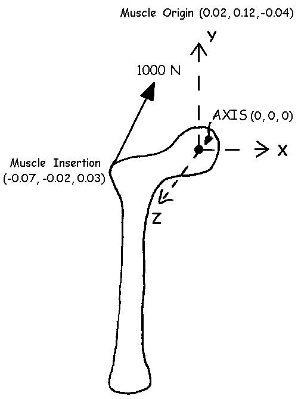
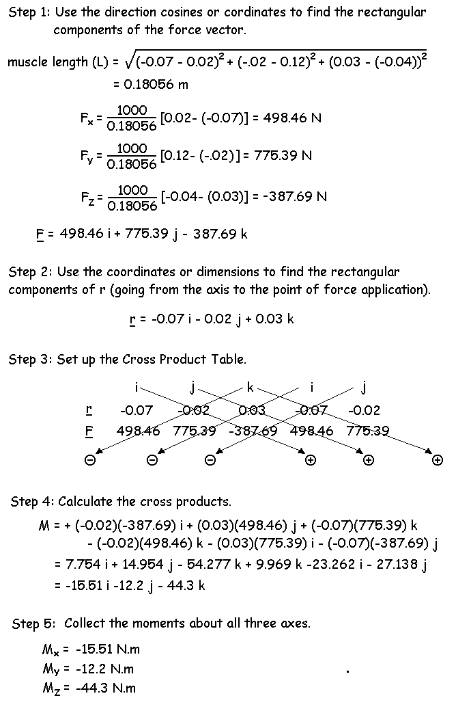

3-D Moments (continued)
3-D Example of a Hip Abductor:
Shown to the right is a free body diagram of the right femur of a subject. Consider the hip joint center to be the axis located at (0, 0, 0). The muscle inserts on the femur at (-0.07, -0.02, 0.03) and pulls toward its origin on the pelvis (0.02, 0.12, -0.04) with a force of 1000 N. Find the moments about the X, Y, and Z axes.
Solution:

Even though the muscle is classified as a hip abductor, it causes moments about all three axes. Biomechanists must not only be able to calculate muscle moments, they must also be able to state the anatomical functions. In this case, moments about the Z axis are adductor/abductor moments. Using the right hand method, we can see that the negative moment is an abductor moment of 44.3 N.m. Moments about the X axis are flexion extension moments and the negative moment by this muscle causes a flexion moment of 15.51 N.m. The moments about the Y axix are internal/external rotation moments and the negative moment indicates an external rotation moment of 12.2 N.m.